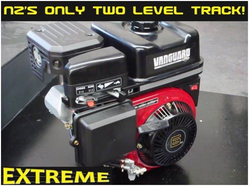
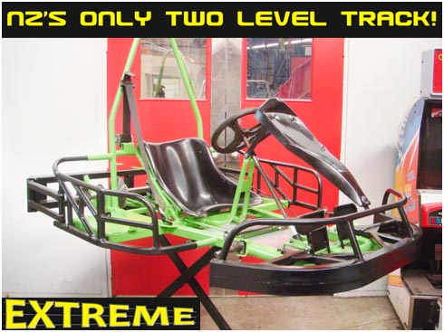
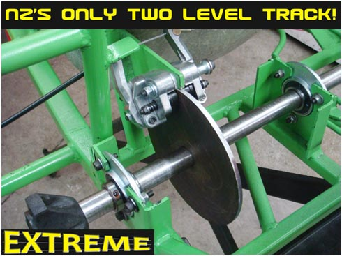
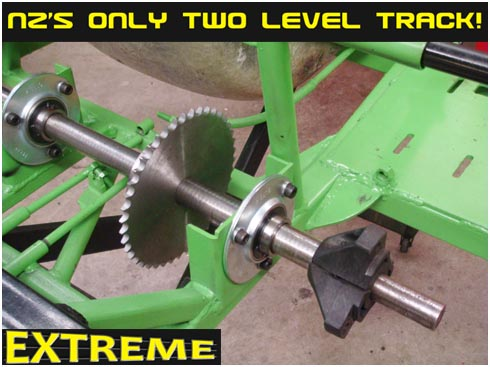

<section class="wow zoomIn">
  <div class="container">
    <div class="row">
      <div class="col-lg-12 text-center">
        <h2 class="section-heading">Karts</h2>
        <h3 class="section-subheading text-muted">
          All our karts are equiped with powerful petrol Briggs and Stratton go-kart engines, allowing full power racing for over 200 laps without refueling.
        <h3>
        
        <h3 class="section-subheading text-muted">
          The karts are designed and built right here at Extreme Indoor Karts by qualified professional engineers to full health and safety standards. The karts are purpose built light weight racing karts specially designed for the Extreme two level track. Extreme go-karts are not overweight battery laden toys, but real fire-breathing racing karts.
        <h3>
        
        
        
        
        <h3 class="section-subheading text-muted">
          Come to Extreme Indoor Karts and experience the excitement of the two level track and roar of proper racing engines.
        <h3>
      </div>
    </div>
    <!-- /.row -->
  </div>
  <!-- /.container -->
</section>
